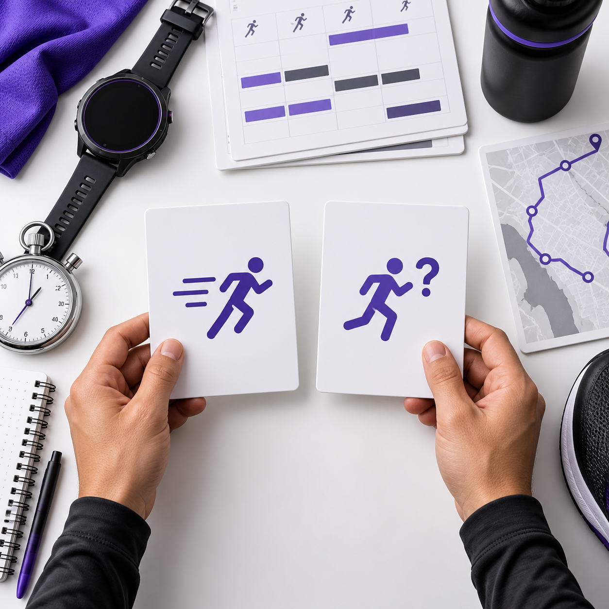

Run at your pace
마라톤 준비, 오늘 내 속도부터 가볍게
지금 페이스를 몰라도 괜찮아요. 목표 거리와 날짜만 정하면 이번 주에 뭘 뛰면 좋을지 짧게 정리해주고, 달린 뒤 기록을 올리면 다음 훈련도 무리 없게 바꿔줍니다.
페이스 몰라도 시작
대충 고르거나 기록으로 계산
딱 필요한 만큼
긴 표 대신 핵심 훈련만
달리고 나서 조정
힘들었으면 줄이고, 괜찮으면 유지
My log
내 기록으로 이어서 보기
닉네임으로 간단히 시작하면 이 브라우저에 훈련표와 코칭 기록을 저장합니다. 다음에 다시 열어도 내 기록을 이어서 볼 수 있어요.
Start easy
처음부터 정확할 필요는 없어요
최근 페이스를 알면 바로 입력하고, 잘 모르겠다면 1km나 5km 기록을 넣거나 가장 비슷한 수준을 고르면 됩니다. 시작은 가볍게, 조정은 달리면서 해요.

Your plan
길게 말고, 핵심만
입력값을 넣고 버튼을 누르면 준비 흐름과 이번에 신경 쓸 훈련만 짧게 보여줍니다.
오늘 뛴 기록 올리기
러닝 앱 캡처를 올리고 오늘 느낌을 고르면 다음 훈련을 유지할지, 살짝 줄일지, 조금 올려도 될지 알려줍니다.
기록을 올리면 다음 훈련을 어떻게 바꿀지 짧게 알려드릴게요.